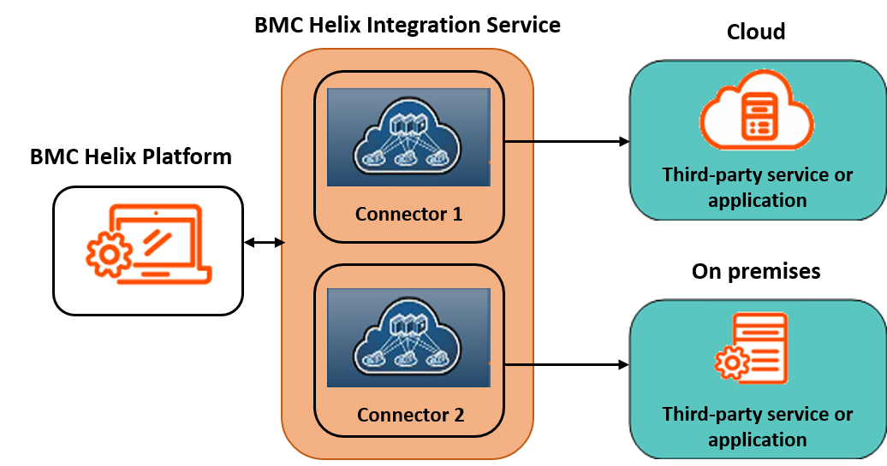
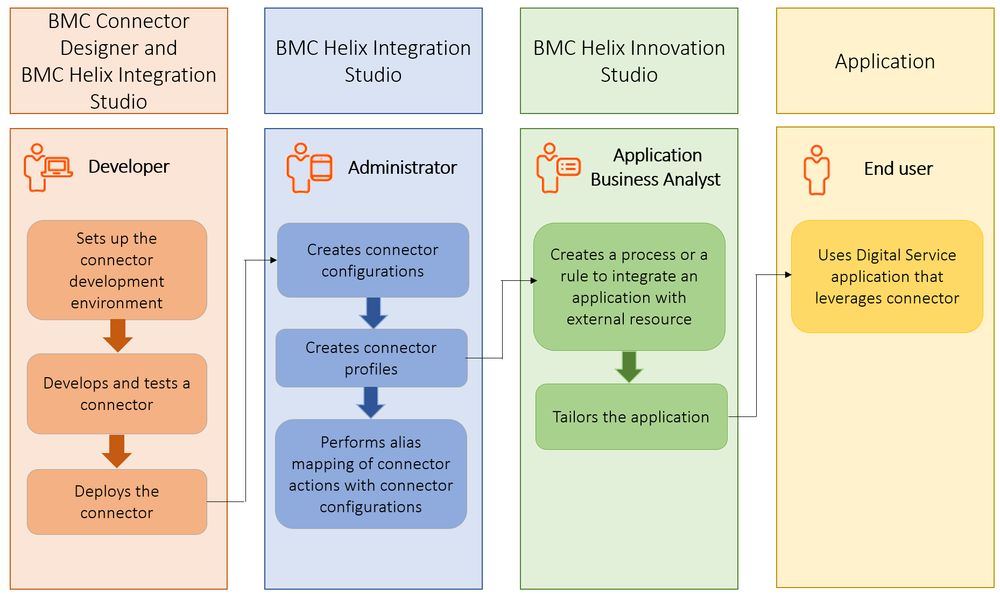

Connectors overview
By using a connector, you can integrate your application with a third-party product, which can be a service or an application. A connector acts as a bridge between your application and the third-party product. You can integrate your application with external systems by using connectors without changing the application code. You can develop connectors to listen for events, perform tasks, or query for information.
You can develop connectors by using BMC Helix Innovation Studio and BMC Helix Integration Service. The BMC Helix Integration Service provides an integration layer and tools that you can use to build connectors. The BMC Helix Integration Service enables different applications to connect seamlessly with applications that are either hosted on cloud or running on premises, as shown in the following image:

For information about BMC Helix Integration Service, see BMC Helix Integration Service  documentation.
documentation.
Notes
When you request a sandbox (on the Developer Portal), you are provisioned with an integration account. You can use this account to access the integration tools such as BMC Helix Integration Studio and BMC Connector Designer.
If you already have a sandbox, you receive an email notification that contains the integration account details when your sandbox is upgraded.
You can develop connectors that perform only synchronous actions. You cannot develop connectors with triggers.
Connector development process
The following image provides an overview of the connector development process. It describes the roles involved, steps required, and the tools used in connector development and connector utilization:

|
Role |
Action |
Reference |
|
Developer |
Sets up the connector development environment |
|
|
Developer |
Develops and tests connector |
|
|
Developer |
Deploys the connector |
|
|
Administrator |
Creates connector configurations |
|
|
Administrator |
Creates connector profiles |
|
|
Administrator |
Performs alias mapping of connector actions with connector configurations |
|
|
Application Business Analyst |
Creates a process or rule to integrate a Digital Service application with external resource |
Automating categorization and assignment of application requests |
|
Application Business Analyst |
Tailors the Digital Service application |
|
|
End user |
Uses Digital Service application that leverages connector |
|
BMC Helix Innovation Studio provides out-of-the box connectors to integrate your applications with third-party products. You can use these connectors in your application processes and rules. In the Process designer and Rule designer, these connectors are available as a Connector property of the Connector element.
Example: To integrate your application with a JIRA project repository
You can develop and use a connector to integrate your application with a JIRA third-party product repository by completing the following tasks:
|
Task |
Role |
Description |
|
Develop connector |
Developer |
The connector for this integration is called JIRA connector.
|
|
Configure connector |
Administrator |
Create the connector configurations and profiles in BMC Helix Integration Service so that the connector can communicate with the third-party system. After the JIRA connector is configured, it is available in BMC Helix Innovation Studio for use.
For information about creating connector configurations and profiles, see Adding or updating a configuration |
|
Build a process or rule to integrate |
Developer or Application Business Analyst |
Integrate your application by creating a process or a rule that consists of the JIRA connector element. You do not need to add a JIRA code specific to your application code. For information about integrating your application with third-party systems, see the following topics: |